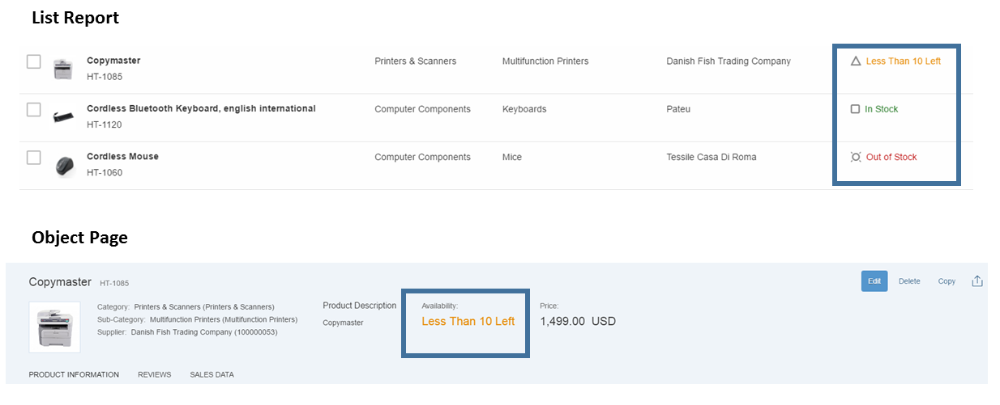

Status Colors and Icons
The UI annotations in CDS for LineItem, Identification and
FieldGroup have an attribute in the corresponding fields that
indicates how critical the field is using colors and icons. This attribute has to refer
to another property, which contains the value of the criticality.
<Annotation Term="UI.LineItem"> <Collection> ... <Record Type="UI.DataField"> <PropertyValue Property="Criticality" Path="to_ProductStock/StockCriticality"/> <PropertyValue Property="Value" Path="to_ProductStock/StockEmergencyLevel"/> <Annotation Term="UI.Importance" EnumMember="UI.ImportanceType/High"/> </Record> ...
The property containing the criticality can have the following values (derived from the
complex type CriticalityType of the vocabulary
com.sap.vocabularies.UI.v1):
-
0 - Neutral
-
1 - Negative
-
2 - Critical
-
3 - Positive
